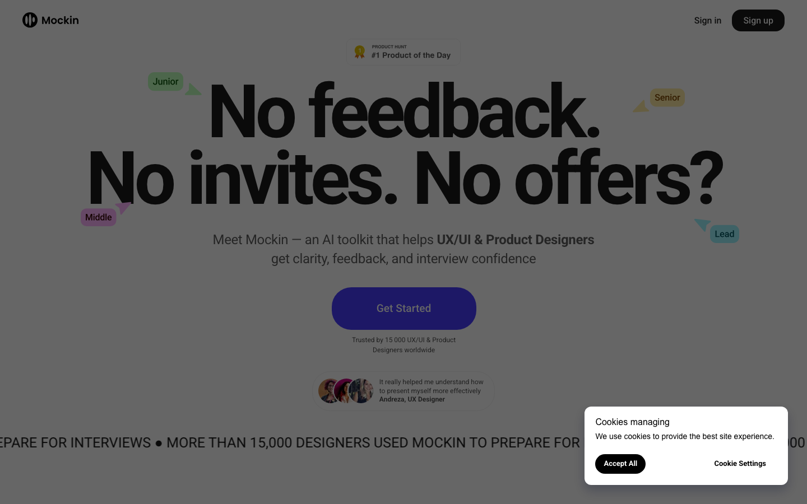
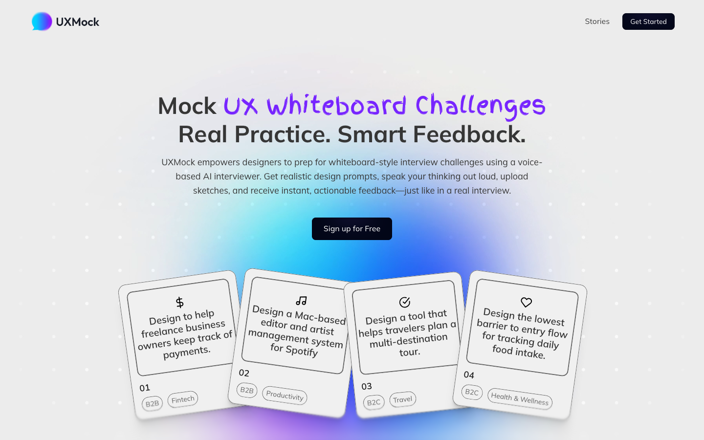
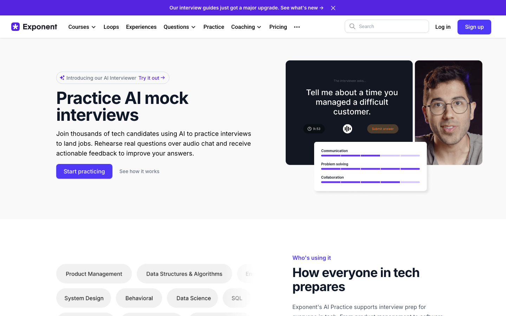
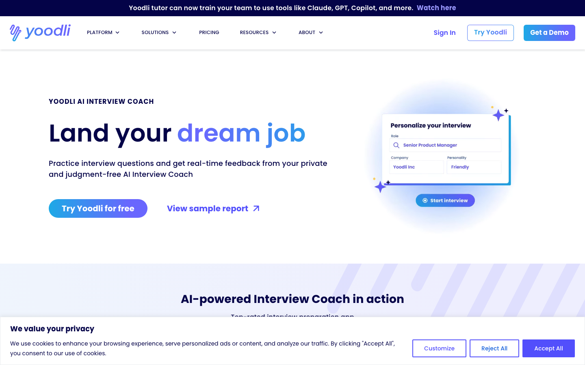
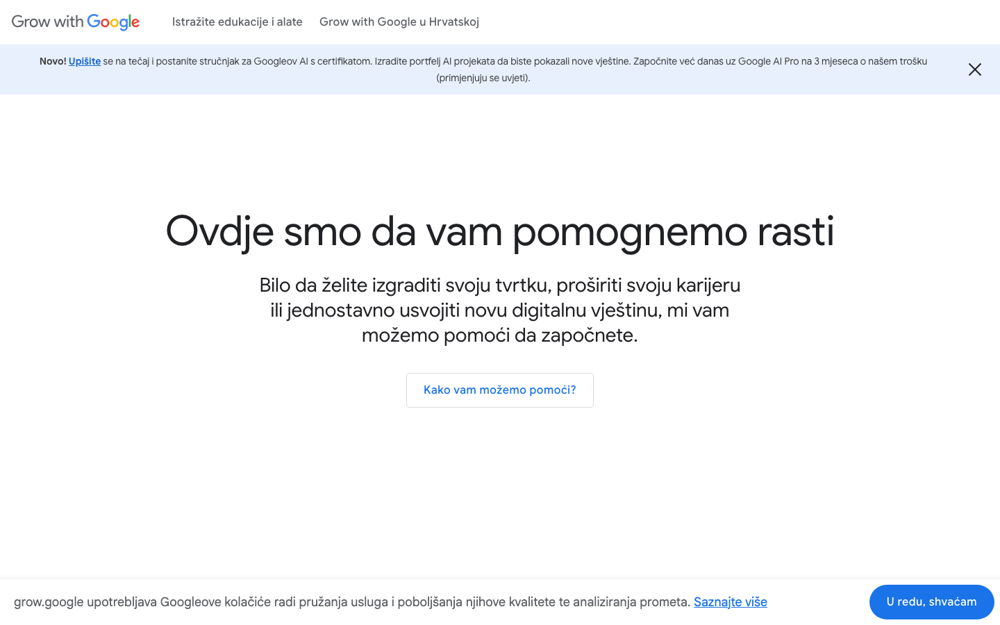
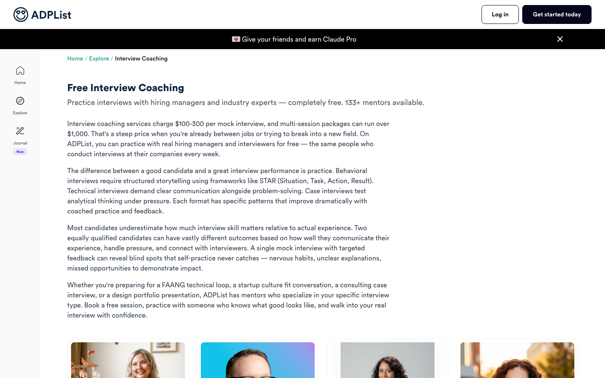
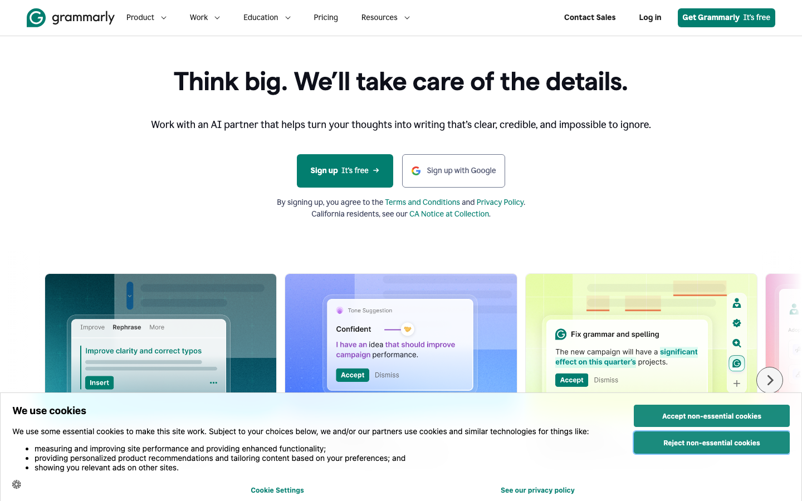
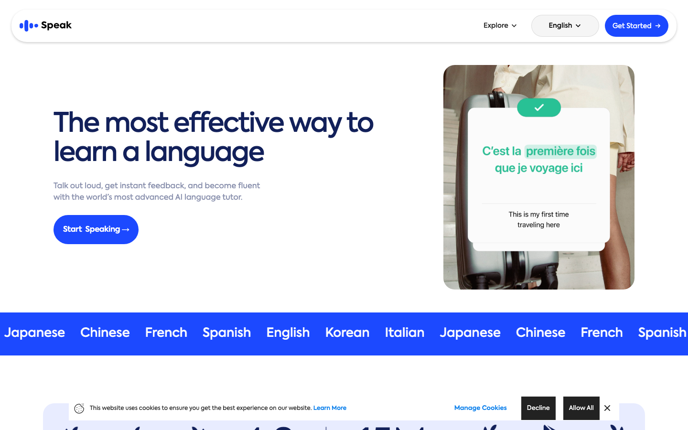

Три уровня: кто конкуренты, насколько глубоким должен быть фидбек (наш moat) и как устроен ключевой цикл продукта. Данные собраны в июне 2026 — live-fetch страниц + Playwright-скриншоты.
Три тира: Hard — лоб-в-лоб, та же задача и аудитория; Soft — та же задача другими средствами; Aspirational — другой домен, но планка опыта, к которой мы стремимся.
AI-моки с грейдингом по hiring-рубрике (communication, problem-solving, structured thinking). Сильный механизм, покрывает PM — но не заточен под дизайн; AI-фидбек только платно.
Общий AI speaking-коуч: async-отчёты + real-time подсказки в интервью. Коучит подачу (темп, слова-паразиты), а не суждение design/PM. Роль-агностик.
Бесплатно: проговариваешь ответы (есть UX-категория), AI транскрибирует и подсвечивает термины / talking points / паттерны речи. Низкий порог, но без скоринга и суждения.
Бесплатный живой 1:1-коучинг; 133+ ментора-хайринг-менеджера; покрывает design-портфолио и PM/case. Настоящее суждение — но привязка к расписанию, нестабильно, не on-demand.
Якорь цены: платный живой коучинг — $100–300/сессия; AI-инструменты — $8–25/мес.
Крафт фидбека: inline-подсказки с объяснением «почему», тон/цели, многомерная оценка вместо одной цифры — «без потери твоего голоса».
Голос + диагностика: «говори вслух — получай мгновенный фидбек»; хвалят за объяснение, почему формулировка слабая. Адаптивная программа.
Привычка и прогресс: стрики, видимый рост навыка, лёгкий ежедневный цикл — модель удержания, превращающая burst-подготовку в привычку.
Измерение выбрано одно — качество и глубина фидбека. Это и есть moat: голос, JD-парсинг и цена — гигиена, которую конкуренты уже умеют. 8 критериев × 5 эталонов, шкала 0–4. Живой коуч (ADPList) показан как потолок суждения.
| Критерий | Mockin | UXMock | Exponent | Yoodli | Grammarly | Коуч |
|---|---|---|---|---|---|---|
| 1 · Покритериальный скоринг | 1 | 3 | 3 | 1 | 3 | 4 |
| 2 · Доказательность («почему») | 2 | 2 | 2 | 2 | 4 | 4 |
| 3 · Actionability | 3 | 2 | 2 | 2 | 4 | 4 |
| 4 · Заточка под формат | 2 | 2 | 2 | 0 | 1 | 4 |
| 5 · Сеньорность суждения | 2 | 2 | 2 | 1 | 1 | 4 |
| 6 · Прозрачность рубрики | 1 | 3 | 2 | 1 | 2 | 3 |
| 7 · Прогресс во времени | 1 | 3 | 2 | 3 | 3 | 1 |
| 8 · Конструктивный тон | 3 | 3 | 2 | 3 | 4 | 3 |
| Итого / 32 | 15 | 20 | 17 | 13 | 22 | 27 |
Ни один AI-инструмент не превышает 22/32. Grammarly лидирует по крафту, но слеп к домену (формат 1, сеньорность 1). Две самые слабые строки рынка — «заточка под формат» и «сеньорность суждения»: никто выше 2. Именно там живой коуч даёт 4/4. Возможность = крафт Grammarly × суждение коуча.
Пять принципиально разных паттернов ядра «ответ → сеньорный фидбек». Каждый — своя архитектура, цена и ощущение.
Синхронный AI-интервьюер звонит: говорит, слушает, перебивает, follow-up вживую.
Максимум реализма и стоимости. Этим владеет UXMock; латентность бьёт по глубине.
Пошаговый текстовый чат: AI спрашивает — ты печатаешь — он копает.
Дёшево, но печать ≠ как реально подают дизайн/портфолио (вслух).
Записываешь (голос) или печатаешь ответ целиком → структурный rubric-отчёт (покритериальные оценки + доказательства + переписанные версии).
Вся вычислительная мощность уходит в глубину оценки. STT асинхронный — дёшево, без латентности.
Ответ показан как документ, фидбек привязан к конкретным фразам — поля как в Grammarly.
Делает сеньорное суждение «читаемым» — это критерий №2 бенчмарка.
Пошаговый каркас ведёт через фреймворк (CIRCLES / STAR-арка) поле за полем.
Учит структуре, но слишком жёсткий, чтобы репетировать живой ответ.
Отложено: A (real-time голос) → премиум phase 2; E (визард) → опциональный «coach mode» для джунов; B — не берём.
Рубрики уже есть у всех. Но ни один AI-инструмент не выше 2/4 по сеньорности суждения и заточке под формат. Выигрыш = крафт фидбека (Grammarly) × суждение живого коуча (ADPList).
Они владеют live-голосом + design challenge. Идём async, depth-first, на portfolio walkthrough + behavioral — форматы, которые ни один hard-конкурент не закрывает.
Их portfolio/STAR-фидбек — планка, которую нужно перебить покритериальным, доказательным фидбеком с цитатами.
~$12–15/мес + годовая со скидкой + job-cycle one-time pass ($30–45) под рваное удержание. Якорь ценности — живой коучинг $100–300/сессия.
NN/g heuristic evaluation (обоснуй критику названным принципом) для design challenge; CIRCLES (7 шагов + 6 критериев) для PM. Это фреймворки структурирования — адаптация в скоринг и есть наш сеньорный слой.
Async запись → глубокий rubric-отчёт, показанный как inline-разбор на полях (Pattern C + D). Real-time голос — премиум phase 2.
6 конкурентов × 12 измерений + колонка-цель для mypath.
| Mockin | UXMock | Exponent | Yoodli | Google Warmup | ADPList | → mypath | |
|---|---|---|---|---|---|---|---|
| Тир | Hard | Hard | Soft | Soft | Soft | Soft | — |
| Аудитория | Дизайнеры | Дизайнеры | PM/SWE | Любая | Любая | Design+PM | Дизайн → PM |
| JD-вопросы | Matcher | ✅ challenge | частично | generic | ✗ | ментор | ✅ ядро |
| Portfolio walkthrough | только Checker | ✗ | ✗ | ✗ | ✗ | ✅ живой | ✅ фокус v1 |
| Behavioral | ✅ STAR | ✗ | ✅ | ✅ | базово | ✅ | ✅ фокус v1 |
| Design challenge | ✗ | ✅ live | ✗ | ✗ | ✗ | ✅ | fast-follow |
| Голос | async | real-time | async | оба | запись | живой | async v1 |
| Скоринг | 7/10 | 6 изм. /10 | рубрика | только подача | нет | качеств. | покритер. + доказ. |
| Глубина рубрики | STAR-плоско | дженерик 6 | солидно, общая | — | — | сеньор (чел.) | сеньор, по формату |
| Прогресс | частично | ✅ | частично | ✅ | ✗ | ✗ | ✅ |
| Цена | $9–45 | $12.99/мес | платно | $8–20/мес | free | free* | ~$12–15 + pass |
| Угроза | 🔴 высокая | 🔴 высокая | 🟡 средняя | 🟢 низкая | 🟢 низкая | 🟡 средняя | — |
* ADPList бесплатен, но привязан к расписанию.
Захвачено через Playwright (июнь 2026), исходники — research/screens/.







